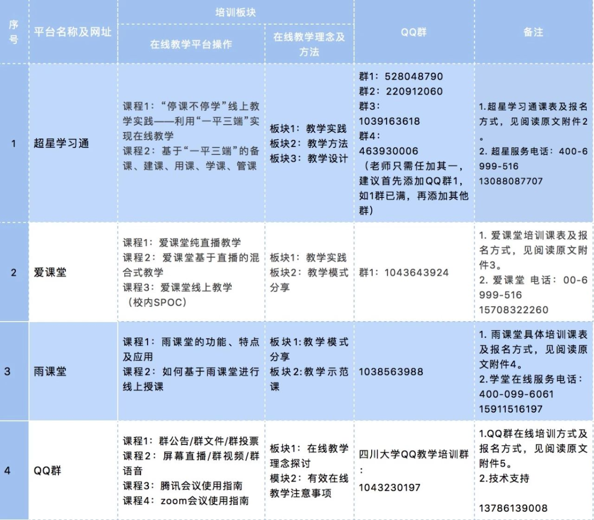

教务处 · 教学通知
关于2019-2020学年春季学期疫情防控期间本科教学方式调整安排的通知
发布时间：2020-02-08
关于2019-2020学年春季学期 疫情防控期间 本科教学方式调整安排的通知 各院（系）及本科教学单位： 根据学校《关于2020年寒假期间学生不得提前返校的通知》和教务处关于《2019-2020学年春季学期开学阶段本科教学工作安排的通知》，为减少疫情对教学秩序的影响，学校决定对2019-2020学年度春季学期本科生课程在学生返校前的教学形式进行调整，实施 四川大学2020年春季学期疫情防控期间本科教学工作方案 。 现将相关事项通知如下： 工作原则 以信息技术与教育教学深度融合的教与学改革创新，推进教学方式变革，采取 “学生不返校、停课不停学”模式 ，教师开展线上教学，学生灵活自主学习。制定课程线上教学预案，先期做好 2020年2月24日至3月22日（即校历第1-4周）线上开课 的各项准备工作，确保按时启动教学，并努力保持教学进度、保证课程容量，做到标准不降、内容不减。此外，学校将视疫情情况对教学方案进行适时调整并另行通知。 课程范围与调整规则 本通知内提到的课程包括四川大学2019-2020年度春季学期全部本科生课程，含双学位（二专）课程。根据授课内容和教学场所的不同，按理论课程、实践教学环节课程分别进行调整，并对授课对象量大面广的公共基础课（思想政治理论课、大学英语、大学数学、体育等课程）单独制定调整方案。 理论课程 授课教师要紧紧围绕课程教学大纲要求，重新规划课程线上（返校前）、线下（返校后）讲授的教学内容和学时分配，科学制定教学进度表、过程考核方案和成绩评定方案。针对我校现有课程的教学形式，建议进行以下几种方式的调整。 1. 以课堂教学线下面授为主的课程，授课教师可根据课程教学内容和特点，在以下三个方案中 选择适合自己课程的一种或多种方式 ，进行学生正式返校前的教学工作： a. 教师收集整理教学参考资料，通过微信群、QQ群或四川大学课程中心、超星学习通、爱课堂、雨课堂等教学平台提前上传课程大纲、教学进度安排、PPT讲稿、动画视频等教学资料，按教学进度下发给学生、布置作业，引导学生线下自学、完成作业，师生共同线上讨论答疑。原则上每门课程学生的周学习时间不少于该课程教学计划规定的周教学时间。待学生正式返校后进行阶段性复习总结，恢复正常课堂教学。（各平台使用方法及培训安排见阅读原文附件2-5） b. 前四周的教学方式向线上教学迁移， 开设SPOC课程 ，开展线上线下混合式教学。 选择互联网上与本课程相关的优质在线开放课程等教学资源，包括视频、课件、参考资料、作业、实验、测验等，辅助本课程教学。 （使用指南见阅读原文附件1） c. 采用 直播课堂 的授课方式， 教师在课表原定的时间、选择合适的地点，进行直播授课 。使用超星学习通、雨课堂、爱课堂等教学平台和工具软件，开展线上直播教学。此前教学过程中已使用过此类APP的教师，可以通过自己熟悉的工具软件进行线上直播教学；此前未接触过相关教学工具软件的老师，建议使用超星学习通平台。学校已为下学期各门课程在四川大学泛雅“学习通”教学平台创设了课程网站，师生以一卡通信息登录网站或APP后可直接进入自己的班级进行课程建设并实施教学。 2. 原计划开展基于SPOC的线上线下混合式教学的课程，可适当调整教学日历，在学生返校前先进行线上教学的相关内容，布置作业，开放线上讨论答疑。 请各开课单位将以上信息告知授课教师，并组织教师以课程为单位建立QQ群或微信群，作为与学生沟通的主要方式。各院（系）按原有助教分配方式（考虑课程性质和工作量）安排助教，因线上教学方式的更改导致对助教提出了更高要求， 各院（系）应尽快启动助教工作，组织参与助教参加教发中心组织的线上教学培训。 请各开课 单位将各门课程联络QQ群或微信群信息汇总到“2019-2020春季学期课程联络群信息汇总表”中（见阅读原文附件6），于2月17日前发送到gxg@scu.edu.cn。 实践教学环节课程 实验课程： 1. 对于需要在实验室才能完成的实验，采用线上虚拟仿真实验平台教学，登录http://www.ilab-x.com网站，如能选择到合适本课程的实验教学项目，可替代现有课程的部分实验; 2. 对于学生可以自行在课后完成的实验，编制实验指导手册，制定详细的实验要求，指导学生线下完成； 3. 除以上两类以外的实验课程，暂缓开课，推迟到学生正式返校后再补上。 实习、实践、实训类课程 ： 暂停，重启时间视疫情发展另行通知，各相关单位应根据实际情况做好此类课程的调整预案。 毕业论文（设计） ： 各指导教师加强与学生的线上交流，指导学生充分利用网络资源做好本科毕业论文（设计）的相关工作和论文撰写工作，必要时可适当调整毕业论文选题。 公共基础课 1. 体育课 :学生返校前的体育课以不依赖场地和器材的慕课、柔韧练习、力量训练等项目为主，由老师根据具体情况返校后考核。 2. 思政课、大学英语、大学数学等公共基础课 应在开课学院统一指导下进行，相同课程号的课程应使用同一门在线开放课程进行辅助教学；开课学院根据课程特点和教学需要，可要求老师同期进行线上直播教学以及QQ群答疑等多种方式。 马克思主义学院、外国语学院、数学学院和体育学院 将为各门公共基础课单独制定疫情防控期间教学方案，明确教学形式与考核方法要求，请关注教务处网站后续的相关通知。 新教学形式下的培训工作安排 新的教学形式对任课教师的挑战比较大，任课教师要始终把教书育人作为第一职责，全力投入。对于不熟悉在线教学软件使用的教师，请务必参加培训，熟练掌握各种功能和使用技巧；已经具备相关软件和资源平台使用经验的教师也要提前准备， 调整教学大纲、实现教材电子化、准备讲课设备、探索与线上教学相适应的全过程考核方式 ，保质保量完成教学工作。 教务处/教师教学发展中心、信息化建设与管理办公室（现代教育技术中心）定于2月10日起，面向2019~2020学年春季课程任课教师，开展在线教学培训。培训、服务信息见下表： 说明：教师可任选在线教学平台进行学习，各位老师在培训及应用过程中，有任何技术问题可以致电或在QQ群上即时沟通。 工作进度安排 1. 2月10日起，各任课教师选择自己需要的线上平台培训公开课，进行在线培训，为课程教学做好准备。 2. 2月21日（周五）前，请各学院（系）成立本科课程线上教学专项工作小组，由院长任组长，主管本科教学的副院长、主管学生工作的副书记任副组长，教务人员、辅导员、班主任任成员，认真做好师生的发动、培训及学生情况摸底等相关处置工作。 对因条件限制或其它原因线上学习有困难的学生，应尽力协助解决；确实因网络受限无法参加课程在线直播的，可提前与教师联系，通过QQ群、课程平台、课程中心、邮箱等方式获取课程资料，进行自学，完成作业。 任课教师做好开课前各项准备工作，教务处网站面向全校公布各门课程QQ群清单，各学生所在学院安排专人协助各任课教师将
